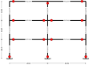
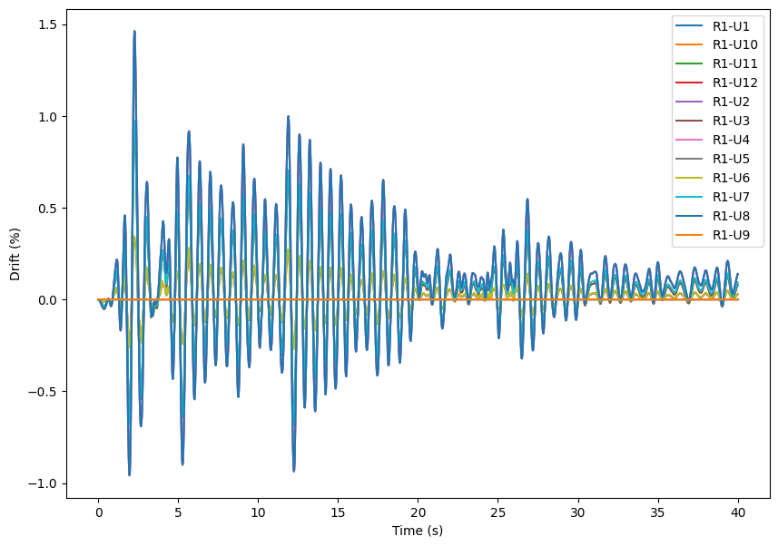

[★★★★★] Integrating Preprocessing with Python
Minimum version: v2.5
In this example, we demonstrate how to use python to preprocess data by creating a frame structure. This example requires some Python familiarity. However, as we are developing a frame structure which contains mainly frame elements, the procedure is relatively straightforward.
Objective
We are going to create a three--storey frame as shown below.

Prerequisites
We are going to find section properties from AISC table, which is available online.
| Python |
|---|
| import pandas
section_table = pandas.read_excel(
'https://www.aisc.org/globalassets/aisc/manual/v15.0-shapes-database/aisc-shapes-database-v15.0.xlsx',
sheet_name=1,
usecols='A:CF')
print(section_table.head())
|
| Text Only |
|---|
1
2
3
4
5
6
7
8
9
10
11
12
13
14
15
16 | Database v15.0
Type EDI_Std_Nomenclature AISC_Manual_Label T_F W A d ddet \
0 W W44X335 W44X335 F 335.0 98.5 44 44
1 W W44X290 W44X290 F 290.0 85.4 43.6 43.625
2 W W44X262 W44X262 F 262.0 77.2 43.3 43.25
3 W W44X230 W44X230 F 230.0 67.8 42.9 42.875
4 W W40X655 W40X655 T 655.0 193.0 43.6 43.625
Ht h ... rts ho PA PA2 PB PC PD T WGi WGo
0 – – ... 4.24 42.2 132 – 148 104 120 38 5.5 –
1 – – ... 4.2 42 131 – 147 103 119 38 5.5 –
2 – – ... 4.17 41.9 131 – 147 102 118 38 5.5 –
3 – – ... 4.13 41.7 130 – 146 102 118 38 5.5 –
4 – – ... 4.71 40.1 132 – 149 104 121 34 7.5 –
[5 rows x 84 columns]
|
Section properties such as area and moment of inertia can be extracted from this table using section designations. It is possible to define such a function now.
| Python |
|---|
| def from_table(designation: str):
index = section_table.index[section_table['AISC_Manual_Label'] == designation].tolist()
assert len(index) == 1
a = section_table.at[index[0], 'A'] # area
sx = section_table.at[index[0], 'Sx'] # elastic modulus
ix = section_table.at[index[0], 'Ix'] # moment of inertia
zx = section_table.at[index[0], 'Zx'] # plastic modulus
return a, sx, ix, zx
|
Then we can use this function to extract section properties from the table. For example,
| Python |
|---|
| print(from_table('W44X230'))
|
| Text Only |
|---|
| (67.8, 971.0, 20800.0, 1100.0)
|
Geometry of the Frame Structure
For simplicity, we assume the frame structure has the same column/beam section for all the columns/beams on the same floor. Under such a condition, two lists of section designations can be provided so that elements can be created. Similarly, geometry information such as floor height, bay span, as well as floor mass, can be provided in the same way.
For example, we can define several lists as follows.
| Python |
|---|
| girder = ['W21X68', 'W21X68', 'W21X68'] # floor 1 2 3
column = ['W14X193', 'W14X159', 'W14X159'] # column 1 2 3
mass = [10., 10., 10.] # floor 1 2 3
span = [240., 240.] # bay span 1 2
height = [120., 120., 120.] # floor height 1 2 3
|
Generate Node Grid
Given that span and height are given, it is possible to calculate the absolute position of the nodes.
| Python |
|---|
| import numpy as np
x_coor = np.cumsum(span)
y_coor = np.cumsum(height)
x_coor = np.insert(x_coor, 0, 0.)
y_coor = np.insert(y_coor, 0, 0.)
print(x_coor, y_coor)
del span, height
|
| Text Only |
|---|
| [ 0. 240. 480.] [ 0. 120. 240. 360.]
|
By using the above coordinates, we can create a grid of nodes. A simple Node class is defined to represent nodes.
| Python |
|---|
| from dataclasses import dataclass
@dataclass
class Node:
tag: int
x: float
y: float
def write_to(self, f_handler):
f_handler.write(f'node {self.tag} {self.x:.2f} {self.y:.2f}\n')
node_pool: dict = {}
node_grid = np.zeros((len(y_coor), len(x_coor))).astype(int)
node_tag = 1
with open('node.sp', 'w') as f:
for i in range(len(x_coor)):
for j in range(len(y_coor)):
node = Node(node_tag, x_coor[i], y_coor[j])
node.write_to(f)
node_pool[node_tag] = node
node_grid[j, i] = node_tag
node_tag += 1
del node_tag
with open('node.sp', 'r') as f:
print(f.read())
|
| Text Only |
|---|
1
2
3
4
5
6
7
8
9
10
11
12 | node 1 0.00 0.00
node 2 0.00 120.00
node 3 0.00 240.00
node 4 0.00 360.00
node 5 240.00 0.00
node 6 240.00 120.00
node 7 240.00 240.00
node 8 240.00 360.00
node 9 480.00 0.00
node 10 480.00 120.00
node 11 480.00 240.00
node 12 480.00 360.00
|
The node_grid can be used to generate elements.
Generate Beam Elements
Starting with the second row, beam elements can be generated by looping over each row.
| Python |
|---|
| from math import sqrt
e = 29 # mpsi, Young's modulus
fy = .05 # mpsi, yield stress
hardening = .01 # isotropic hardening ratio
nm_size = 1.15 # initial surface size
section_pool: dict = {}
element_pool: dict = {}
@dataclass
class Section:
tag: int
name: str
fp: float
mp: float
ea: float
ei: float
mult: float
def __init__(self, tag, name):
self.tag = tag
self.name = name
_a, _sx, _ix, _zx = from_table(name)
self.fp = fy * _a
self.mp = fy * _sx
self.ea = e * _a
self.ei = e * _ix
self.mult = fy * _zx
def write_to(self, f_handler, d, h):
f_handler.write(
f'section NM2D3 {self.tag} {self.ea:.4e} {self.ei:.4e} ' # basic section properties
f'{self.fp:.4e} {self.mp:.4e} {d} ' # yield forces
f'{h} 0. 0. {self.mult / self.mp - 1:.4f} 1. ' # hardening configurations
f'0.\n') # linear density
@dataclass
class Element:
tag: int
node_i: Node
node_j: Node
section: Section
element_length: float
def __init__(self, tag, _node_i, _node_j, _section):
self.tag = tag
self.node_i = _node_i
self.node_j = _node_j
self.section = _section
self.element_length = sqrt((_node_i.x - _node_j.x) ** 2 + (_node_i.y - _node_j.y) ** 2)
def write_to(self, f_handler):
f_handler.write(f'element NMB21 {self.tag} {self.node_i.tag} {self.node_j.tag} {self.section.tag}\n')
element_tag = 1
section_tag = 1
with open('beam.sp', 'w') as f:
for i in range(1, len(y_coor)):
section = Section(section_tag, girder[i - 1])
section.write_to(f, nm_size, hardening)
section_pool[section_tag] = section
for j in range(len(x_coor) - 1):
node_i = node_grid[i, j]
node_j = node_grid[i, j + 1]
element = Element(element_tag, node_pool[node_i], node_pool[node_j], section)
element.write_to(f)
element_pool[element_tag] = element
element_tag += 1
section_tag += 1
with open('beam.sp', 'r') as f:
print(f.read())
|
| Text Only |
|---|
| section NM2D3 1 5.8000e+02 4.2920e+04 1.0000e+00 7.0000e+00 1.15 0.01 0. 0. 0.1429 1. 0.
element NMB21 1 2 6 1
element NMB21 2 6 10 1
section NM2D3 2 5.8000e+02 4.2920e+04 1.0000e+00 7.0000e+00 1.15 0.01 0. 0. 0.1429 1. 0.
element NMB21 3 3 7 2
element NMB21 4 7 11 2
section NM2D3 3 5.8000e+02 4.2920e+04 1.0000e+00 7.0000e+00 1.15 0.01 0. 0. 0.1429 1. 0.
element NMB21 5 4 8 3
element NMB21 6 8 12 3
|
Generate Column Elements
Similarly, column elements can be generated by looping over each column.
| Python |
|---|
| with open('column.sp', 'w') as f:
for i in range(len(y_coor) - 1):
section = Section(section_tag, column[i])
section.write_to(f, nm_size, hardening)
section_pool[section_tag] = section
for j in range(len(x_coor)):
node_i = node_grid[i, j]
node_j = node_grid[i + 1, j]
element = Element(element_tag, node_pool[node_i], node_pool[node_j], section)
element.write_to(f)
element_pool[element_tag] = element
element_tag += 1
section_tag += 1
with open('column.sp', 'r') as f:
print(f.read())
|
| Text Only |
|---|
1
2
3
4
5
6
7
8
9
10
11
12 | section NM2D3 4 1.6472e+03 6.9600e+04 2.8400e+00 1.5500e+01 1.15 0.01 0. 0. 0.1452 1. 0.
element NMB21 7 1 2 4
element NMB21 8 5 6 4
element NMB21 9 9 10 4
section NM2D3 5 1.3543e+03 5.5100e+04 2.3350e+00 1.2700e+01 1.15 0.01 0. 0. 0.1299 1. 0.
element NMB21 10 2 3 5
element NMB21 11 6 7 5
element NMB21 12 10 11 5
section NM2D3 6 1.3543e+03 5.5100e+04 2.3350e+00 1.2700e+01 1.15 0.01 0. 0. 0.1299 1. 0.
element NMB21 13 3 4 6
element NMB21 14 7 8 6
element NMB21 15 11 12 6
|
Fibre Based Elements
The similar procedure can be used to generate fibre based elements with slight modifications. Here we use F21 element. It relies on sections, and designations can be directly used to create sections. In this example, we use US2D category.
| Python |
|---|
| with open('fibre_frame.sp', 'w') as f:
f.write(f'material Bilinear1D 1 {e} {fy} {hardening}\n\n')
for v in section_pool.values():
f.write(f'section US2D {v.name} {v.tag} 1\n')
f.write('\n')
for v in element_pool.values():
f.write(f'element F21 {v.tag} {v.node_i.tag} {v.node_j.tag} {v.section.tag}\n')
with open('fibre_frame.sp', 'r') as f:
print(f.read())
|
| Text Only |
|---|
1
2
3
4
5
6
7
8
9
10
11
12
13
14
15
16
17
18
19
20
21
22
23
24 | material Bilinear1D 1 29 0.05 0.01
section US2D W21X68 1 1
section US2D W21X68 2 1
section US2D W21X68 3 1
section US2D W14X193 4 1
section US2D W14X159 5 1
section US2D W14X159 6 1
element F21 1 2 6 1
element F21 2 6 10 1
element F21 3 3 7 2
element F21 4 7 11 2
element F21 5 4 8 3
element F21 6 8 12 3
element F21 7 1 2 4
element F21 8 5 6 4
element F21 9 9 10 4
element F21 10 2 3 5
element F21 11 6 7 5
element F21 12 10 11 5
element F21 13 3 4 6
element F21 14 7 8 6
element F21 15 11 12 6
|
Generate Mass
For simplicity, we only apply horizontal mass to each node, the procedure is similar to that of frame elements.
To keep code modular, we define a mass grid to store mass at each node.
| Python |
|---|
| column_num = len(x_coor)
if 1 == column:
portions = 1.
else:
portions = 2. * (column_num - 1)
# unit conversion
portions *= 12 * 1000
# calculate tributary mass by assuming uniform density
# thus exterior nodes take half of the mass of interior nodes
mass_grid = np.zeros((len(y_coor), column_num))
for i in range(1, len(y_coor)):
for j in range(column_num):
mass_grid[i, j] = mass[i - 1] / portions
for j in range(1, column_num - 1):
mass_grid[i, j] *= 2.
print(mass_grid)
del column_num, portions
|
| Text Only |
|---|
| [[0. 0. 0. ]
[0.00020833 0.00041667 0.00020833]
[0.00020833 0.00041667 0.00020833]
[0.00020833 0.00041667 0.00020833]]
|
Now we assign mass to each node.
| Python |
|---|
| with open('mass.sp', 'w') as f:
for node_tag, mass in zip(node_grid.flatten(), mass_grid.flatten()):
if mass == 0.:
continue
f.write(f'element Mass {element_tag} {node_tag} {mass :.4e} 1 2\n')
element_tag += 1
with open('mass.sp', 'r') as f:
print(f.read())
|
| Text Only |
|---|
| element Mass 16 2 2.0833e-04 1 2
element Mass 17 6 4.1667e-04 1 2
element Mass 18 10 2.0833e-04 1 2
element Mass 19 3 2.0833e-04 1 2
element Mass 20 7 4.1667e-04 1 2
element Mass 21 11 2.0833e-04 1 2
element Mass 22 4 2.0833e-04 1 2
element Mass 23 8 4.1667e-04 1 2
element Mass 24 12 2.0833e-04 1 2
|
Analysis Settings
The basic geometry of the model is defined in node.sp, beam.sp, column.sp and mass.sp. We import those files in the main script.
| Python |
|---|
| file_list = ['node.sp', 'beam.sp', 'column.sp', 'mass.sp']
main_file = open('three-storey-frame.sp', 'w')
for file in file_list:
main_file.write(f'file {file}\n')
|
The boundary conditions can be assigned by simply fixing all bottom nodes.
| Python |
|---|
| main_file.write(f'fix 1 P 1 {" ".join(str(tag) for tag in node_grid[0, :])}\n')
pass
|
The ground motion shall be applied. The ELNS file contains one of the accelerograms of the 1940 El Centro Earthquake. It is normalised so that the maximum amplitude is unity, we assign a PGA of \(0.5g\).
| Python |
|---|
| pga = .5
main_file.write(f'\namplitude Tabular 1 ELNS\n')
# 1 g = 386.0885826772 in/s2
main_file.write(f'\nacceleration 1 1 {386.0885826772 * pga:.5e} 1\n')
pass
|
For results, we can, for example, record the nodal displacement history.
| Python |
|---|
| recorder_tag = 1
main_file.write(f'\nhdf5recorder {recorder_tag} Node U ' + ' '.join([str(tag) for tag in node_pool.keys()]) + '\n')
pass
|
For illustration, we can also record element yield flag at both ends so that the corresponding plastic hinge distribution can be generated. The yield flag is not generally available in other elements.
| Python |
|---|
| recorder_tag += 1
main_file.write(
f'\nhdf5recorder {recorder_tag} Element YF ' + ' '.join([str(tag) for tag in element_pool.keys()]) + '\n')
pass
|
We keep writing dynamic analysis step and the corresponding settings into the file.
| Python |
|---|
| # dynamic step
duration = 40.
time_step = 1E-2
main_file.write(f'\nstep dynamic 1 {duration:.3e}\n')
main_file.write(f'set ini_step_size {time_step:.2e}\n')
main_file.write('set fixed_step_size true\n')
main_file.write('set sparse_mat true\n')
main_file.write('set system_solver SuperLU\n\n')
main_file.write('converger AbsIncreDisp 1 1E-10 10 true\n\n')
# damping model
main_file.write('integrator LeeNewmarkFull 1 .25 .5 \\\n'
'-type0 2.66040e-02 1.87264e-01 \\\n'
'-type0 2.66170e-02 5.30209e+00 \\\n'
'-type0 2.66310e-02 2.82431e+01 \\\n'
'-type0 2.70320e-02 1.51584e+02 \\\n'
'-type0 2.65990e-02 9.96227e-01 \\\n'
'-type0 3.90780e-02 1.00100e-03 \\\n'
'-type0 2.70050e-02 6.56300e-03 \\\n'
'-type0 2.66190e-02 3.51830e-02 \\\n'
'-type0 3.91040e-02 9.95802e+02\n')
main_file.write('\nanalyze\n')
main_file.write(f'\nsave recorder {" ".join([str(tag + 1) for tag in range(recorder_tag)])}\n')
main_file.write('\nexit\n')
pass
|
Do not forget to close the main file.
| Python |
|---|
| main_file.close()
with open('three-storey-frame.sp', 'r') as f:
print(f.read())
|
| Text Only |
|---|
1
2
3
4
5
6
7
8
9
10
11
12
13
14
15
16
17
18
19
20
21
22
23
24
25
26
27
28
29
30
31
32
33
34
35
36
37
38 | file node.sp
file beam.sp
file column.sp
file mass.sp
fix 1 P 1 1 5 9
amplitude Tabular 1 ELNS
acceleration 1 1 1.93044e+02 1
hdf5recorder 1 Node U 1 2 3 4 5 6 7 8 9 10 11 12
hdf5recorder 2 Element YF 1 2 3 4 5 6 7 8 9 10 11 12 13 14 15
step dynamic 1 4.000e+01
set ini_step_size 1.00e-02
set fixed_step_size true
set sparse_mat true
set system_solver SuperLU
converger AbsIncreDisp 1 1E-10 10 true
integrator LeeNewmarkFull 1 .25 .5 \
-type0 2.66040e-02 1.87264e-01 \
-type0 2.66170e-02 5.30209e+00 \
-type0 2.66310e-02 2.82431e+01 \
-type0 2.70320e-02 1.51584e+02 \
-type0 2.65990e-02 9.96227e-01 \
-type0 3.90780e-02 1.00100e-03 \
-type0 2.70050e-02 6.56300e-03 \
-type0 2.66190e-02 3.51830e-02 \
-type0 3.91040e-02 9.95802e+02
analyze
save recorder 1 2
exit
|
Finally, let's pack everything into an archive so that it can be downloaded.
| Python |
|---|
| import os
from zipfile import ZipFile
file_list.append('fibre_frame.sp')
file_list.append('three-storey-frame.sp')
file_list.append('ELNS')
with ZipFile('three-storey-frame.zip', 'w') as f:
for file in file_list:
f.write(file)
|
Run Analysis
The analysis can be run by calling the executable.
The online documentation is not calling the executable, but it is possible to run the analysis locally with the application available.
| Python |
|---|
| from shutil import which
def run_analysis():
if os.name == 'nt':
exe_name = 'suanPan.exe'
else:
exe_name = 'suanpan'
if which(exe_name):
os.system(f'{exe_name} -np -f three-storey-frame.sp')
run_analysis()
|
Roof Displacement History
The result file will be generated and stored in .h5 file. We can read the file and plot the results.
| Python |
|---|
| import h5py
import matplotlib.pyplot as plt
import glob
def plot_result():
h5_file = glob.glob('*U.h5')
if len(h5_file) == 0:
return
plt.figure(figsize=(10, 7))
with h5py.File(h5_file[0], 'r') as result_file:
for group in result_file.values():
for key, data in group.items():
plt.plot(data[:, 0], data[:, 1] / max(y_coor) * 100., label=key)
plt.xlabel('Time (s)')
plt.ylabel('Drift (%)')
plt.legend()
plt.show()
plot_result()
|

Clean up the files to end this example.
| Python |
|---|
| for file in file_list:
if file == 'ELNS':
continue
if os.path.exists(file):
os.remove(file)
|
Let's create some TikZ commands to be used to plot plastic hinge distribution.
| Python |
|---|
| tikz: list = []
# generate coordinates to represent nodal positions
for node in node_pool.values():
tikz.append(f'\\coordinate(N{node.tag})at({node.x / 1E2},{node.y / 1E2});')
# draw frame elements
for element in element_pool.values():
node_i = element.node_i
node_j = element.node_j
if node_i.x == node_j.x:
# vertical columns
tikz.append(
f'\\draw[line width=1mm](N{element.node_i.tag})--(N{element.node_j.tag})node[midway,fill=white,font=\\tiny,rotate=90]{{{element.section.name}}};')
else:
# horizontal beams
tikz.append(
f'\\draw[line width=1mm](N{element.node_i.tag})--(N{element.node_j.tag})node[midway,fill=white,font=\\tiny]{{{element.section.name}}};')
hinge_label = '[fill=red,circle,draw,inner sep=0,minimum size=3mm]'
h5_file = glob.glob('*YF.h5')
if len(h5_file) > 0:
with h5py.File(h5_file[0], 'r') as h_file:
h5_prefix = h5_file[0].split('.')[0]
for g in h_file.values():
for k, v in g.items():
element_tag = int(k.replace(h5_prefix, ''))
node_i = element_pool[element_tag].node_i.tag
node_j = element_pool[element_tag].node_j.tag
if v[:, 1].max() > .5:
tikz.append(f'\\node{hinge_label}at($(N{node_i})!.1!(N{node_j})$){{}};')
if v[:, 2].max() > .5:
tikz.append(f'\\node{hinge_label}at($(N{node_i})!.9!(N{node_j})$){{}};')
with open(f'DIST.tex', 'w') as f:
f.write('\\begin{tikzpicture}[scale=2]\n')
f.write('\n'.join(tikz))
f.write('\n\\end{tikzpicture}\n')
with open(f'DIST.tex', 'r') as f:
print(f.read())
|
| Text Only |
|---|
1
2
3
4
5
6
7
8
9
10
11
12
13
14
15
16
17
18
19
20
21
22
23
24
25
26
27
28
29
30
31
32
33
34
35
36
37
38
39
40
41
42
43 | \begin{tikzpicture}[scale=2]
\coordinate(N1)at(0.0,0.0);
\coordinate(N2)at(0.0,1.2);
\coordinate(N3)at(0.0,2.4);
\coordinate(N4)at(0.0,3.6);
\coordinate(N5)at(2.4,0.0);
\coordinate(N6)at(2.4,1.2);
\coordinate(N7)at(2.4,2.4);
\coordinate(N8)at(2.4,3.6);
\coordinate(N9)at(4.8,0.0);
\coordinate(N10)at(4.8,1.2);
\coordinate(N11)at(4.8,2.4);
\coordinate(N12)at(4.8,3.6);
\draw[line width=1mm](N2)--(N6)node[midway,fill=white,font=\tiny]{W21X68};
\draw[line width=1mm](N6)--(N10)node[midway,fill=white,font=\tiny]{W21X68};
\draw[line width=1mm](N3)--(N7)node[midway,fill=white,font=\tiny]{W21X68};
\draw[line width=1mm](N7)--(N11)node[midway,fill=white,font=\tiny]{W21X68};
\draw[line width=1mm](N4)--(N8)node[midway,fill=white,font=\tiny]{W21X68};
\draw[line width=1mm](N8)--(N12)node[midway,fill=white,font=\tiny]{W21X68};
\draw[line width=1mm](N1)--(N2)node[midway,fill=white,font=\tiny,rotate=90]{W14X193};
\draw[line width=1mm](N5)--(N6)node[midway,fill=white,font=\tiny,rotate=90]{W14X193};
\draw[line width=1mm](N9)--(N10)node[midway,fill=white,font=\tiny,rotate=90]{W14X193};
\draw[line width=1mm](N2)--(N3)node[midway,fill=white,font=\tiny,rotate=90]{W14X159};
\draw[line width=1mm](N6)--(N7)node[midway,fill=white,font=\tiny,rotate=90]{W14X159};
\draw[line width=1mm](N10)--(N11)node[midway,fill=white,font=\tiny,rotate=90]{W14X159};
\draw[line width=1mm](N3)--(N4)node[midway,fill=white,font=\tiny,rotate=90]{W14X159};
\draw[line width=1mm](N7)--(N8)node[midway,fill=white,font=\tiny,rotate=90]{W14X159};
\draw[line width=1mm](N11)--(N12)node[midway,fill=white,font=\tiny,rotate=90]{W14X159};
\node[fill=red,circle,draw,inner sep=0,minimum size=3mm]at($(N2)!.1!(N6)$){};
\node[fill=red,circle,draw,inner sep=0,minimum size=3mm]at($(N2)!.9!(N6)$){};
\node[fill=red,circle,draw,inner sep=0,minimum size=3mm]at($(N7)!.9!(N8)$){};
\node[fill=red,circle,draw,inner sep=0,minimum size=3mm]at($(N6)!.1!(N10)$){};
\node[fill=red,circle,draw,inner sep=0,minimum size=3mm]at($(N6)!.9!(N10)$){};
\node[fill=red,circle,draw,inner sep=0,minimum size=3mm]at($(N3)!.1!(N7)$){};
\node[fill=red,circle,draw,inner sep=0,minimum size=3mm]at($(N3)!.9!(N7)$){};
\node[fill=red,circle,draw,inner sep=0,minimum size=3mm]at($(N7)!.1!(N11)$){};
\node[fill=red,circle,draw,inner sep=0,minimum size=3mm]at($(N7)!.9!(N11)$){};
\node[fill=red,circle,draw,inner sep=0,minimum size=3mm]at($(N4)!.1!(N8)$){};
\node[fill=red,circle,draw,inner sep=0,minimum size=3mm]at($(N8)!.9!(N12)$){};
\node[fill=red,circle,draw,inner sep=0,minimum size=3mm]at($(N1)!.1!(N2)$){};
\node[fill=red,circle,draw,inner sep=0,minimum size=3mm]at($(N5)!.1!(N6)$){};
\node[fill=red,circle,draw,inner sep=0,minimum size=3mm]at($(N9)!.1!(N10)$){};
\end{tikzpicture}
|